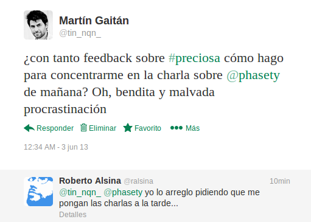
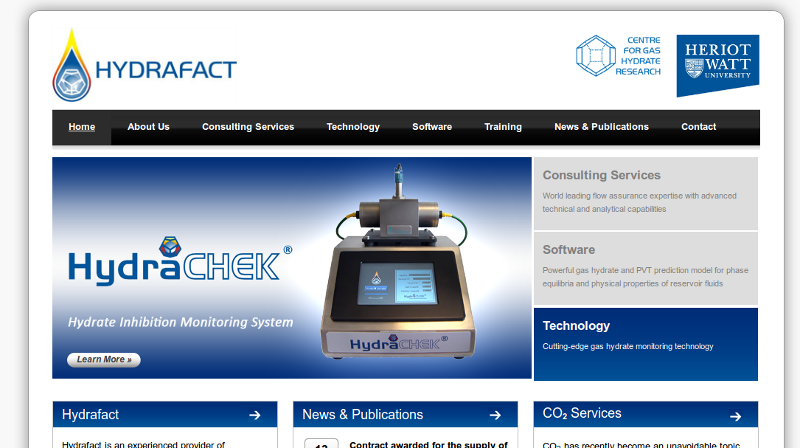
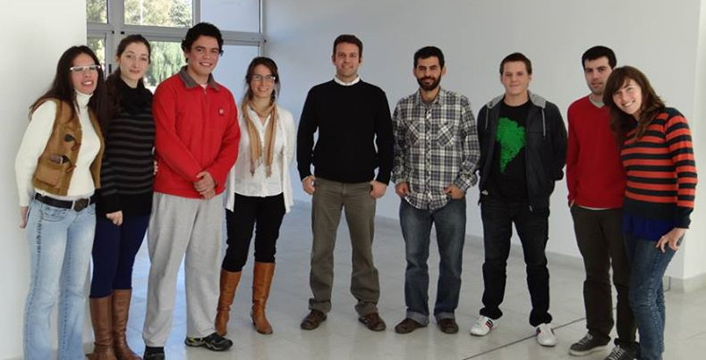

Phasety ♥ IDTQ
Una presentación para decir
y viceversa
por Martín Gaitán
A modo de pedido de disculpas
¿Qué es Phasety?
Los científicos estudian lo que es. Los ingenieros crean lo que nunca ha sido
Source: Theodore von Karman
Lo que nunca ha sido
Crear EBTs a partir de conocimiento especializado
No es común en Argentina
Pero ahora hay condiciones propicias
Phasety, creada por ingenieros aprendiendo sobre la marcha lo que la universidad no les enseñó (¿Por qué?)
No es común en Argentina
Pero ahora hay condiciones propicias
Phasety, creada por ingenieros aprendiendo sobre la marcha lo que la universidad no les enseñó (¿Por qué?)
¿Qué es una EBT?
"Son aquellas empresas en las que parte o todo el proceso productivo sucede en el cerebro de sus trabajadores"
Source: Dr. Lino Baraño, Ministro de Ciencia y tecnología.
No me chamuyei negro ¿Qué lo que hacei en faseti?
"Uno vende humo"
Source: Dr. Daniel Pusiol
De paso, bonito el logo, no?
¿Qué hacemos?
Consultoría en termodinámica
Somos (dijo el mosquito) especialistas en equilibrio de fases y modelado termodinámico
Software científico
Utilizamos tecnologías modernas y probadas para el desarrollo de software de simulación y visualización
Aplicado a la industria del petróleo
A través de socios estratégicos, sabemos (dijeron los mosquitos) qué necesita la industria
Nuestros objetivos
Ser felices
Crear una empresa sustentable
Que de (mucho) trabajo de calidad
Que aporte a la soberanía tecnológica del país
y de yapa ser líderes de Latinoamérica en lo que hacemos
(Mosquitos agrandados)
Ajá. Y cómo empezó esto?
80's: Cismondi dejó de comer carne y se volvió ñoño
2000/2005: Doctorado en Plapiqui e IVP-SEP (Dinamarca)
2006: Tesis (Nace GPEC)
2009: Curso Michelsen (Los tortolitos se conocen)
2010: Renace GPEC (Tesis de este negrito)
2011: Marcelo Crotti - INLAB
2012: PICT Start Up + Incubadora UNC!
2000/2005: Doctorado en Plapiqui e IVP-SEP (Dinamarca)
2006: Tesis (Nace GPEC)
2009: Curso Michelsen (Los tortolitos se conocen)
2010: Renace GPEC (Tesis de este negrito)
2011: Marcelo Crotti - INLAB
2012: PICT Start Up + Incubadora UNC!
Es 2013, ¿por dónde andán?
Transitando el valle de la muerte

¿Hay posibilidades de éxito?


¿Pero en Argentina?

Empretecno cierra en 2 semanas
¿Qué proyectos hay en curso?
GPEC (debuggeado y relanzado) y Johannes

¿Y el petróleo lo untan en el sanguche vegetariano?
¡Calmaos! (pero no tanto)
No es soplar y hacer... equilibrios de fase
Hace falta conocer qué hace falta hacer
Asegurarnos (lo que podamos) que podemos hacerlo
y tener recursos para hacerlo.
Hace falta conocer qué hace falta hacer
Asegurarnos (lo que podamos) que podemos hacerlo
y tener recursos para hacerlo.
Estamos resolviendo todo eso junto
Y juntos
Hasta ahora de qué comen?
Del aire
Padrinazgo (finalizado) de INLAB
Aporte caritativo de Papá Gaitán
Bolsillos propios (te quiero Machinalis, te quiere Conicet)
y un poco de PICT (el poco que era para esto, no?)
Padrinazgo (finalizado) de INLAB
Aporte caritativo de Papá Gaitán
Bolsillos propios (te quiero Machinalis, te quiere Conicet)
y un poco de PICT (el poco que era para esto, no?)
< $2000/mes ¡Mosquitos!
¿De qué piensan comer?
Hasta que pasemos el valle...
GPEC Pro / Johannes
Fonsoft
Empretecno (crucen los dedos) (también los de las patas)
Trabajitos y consolutoriítas
Vuelva a la diapositiva anterior
Fonsoft
Empretecno (crucen los dedos) (también los de las patas)
Trabajitos y consolutoriítas
Vuelva a la diapositiva anterior
IDTQ querido, Phasety está contigo
Phasety nació gracias a IDTQ
Podemos (y queremos) trabajar codo a codo
Con transparencia y buena leche
Inspiración: LCD + Clariphy + Fundación Tarpuy
Prestigio p/Phasety, nuevas puertas p/IDTQ
Podemos (y queremos) trabajar codo a codo
Con transparencia y buena leche
Inspiración: LCD + Clariphy + Fundación Tarpuy
Prestigio p/Phasety, nuevas puertas p/IDTQ
Ideas para el
"y viceversa"
Ahora
Trabajemos en Johannes colaborativamente
Capacitaciones comunes (Python!)
"Hola empresa, te presento a IDTQ"
Comamo'un asado, tomemo un ferné
Capacitaciones comunes (Python!)
"Hola empresa, te presento a IDTQ"
Comamo'un asado, tomemo un ferné
Después
Becas Doc cofinanciadas
Cursos pagos para 3ros codictados
Consultorías/desarrollos de IDTQ para Phasety
Alternativa laboral a postdoc/conicet (?)
Comamo'un asado, tomemo un ferné
Cursos pagos para 3ros codictados
Consultorías/desarrollos de IDTQ para Phasety
Alternativa laboral a postdoc/conicet (?)
Comamo'un asado, tomemo un ferné
Son las 4:45am.

Entonces...